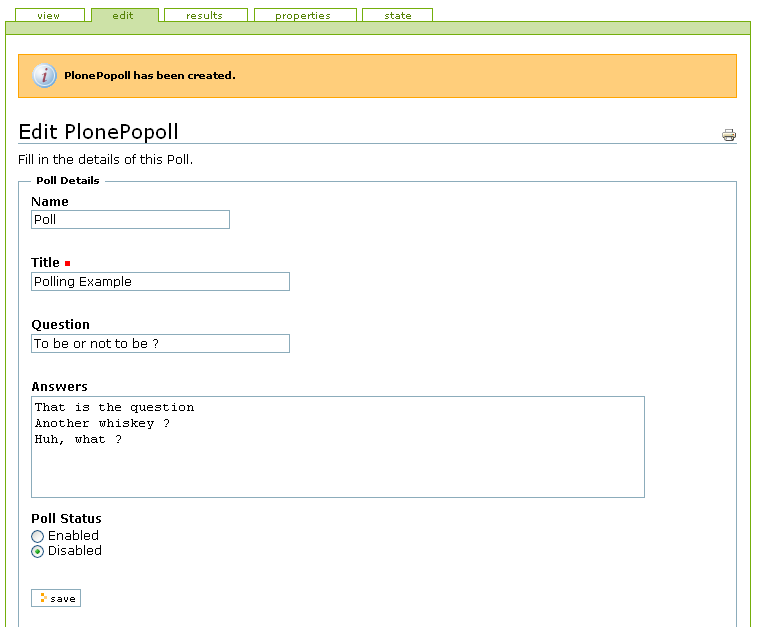
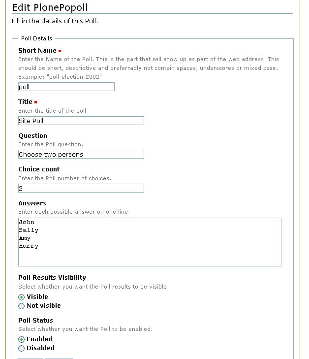
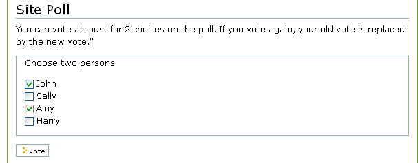
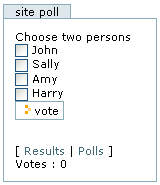
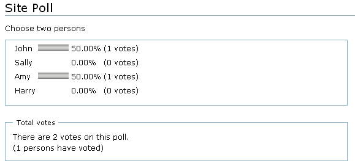

With PlonePopoll is a poll tool. You just have to define several possible answers to a question, enable the poll, and then your users can vote for one of the answers on the poll.
After having voted, the poll results are shown in a bar chart displaying the number of votes and percentage per answer along with the total number of votes.
When the poll is ober, you can disable it, so that only the results can be consulted.
A user has only one vote, but he can change his mind and vote differently later on. Voting again only changes the vote of the user, but does not increasethe total the number of votes.
PlonePopoll has been designed by the Ingeniweb team.
And, of course, it's Open-Source (GPL licence).
To make polls accessible to your users, a poll slot is added to your right slots upon Installation.
PlonePopoll is a new content type that you can add to your Plone site at any place. It will work together with the portal_popoll tool that is added to your Plone site.
The edit form of the PlonePopoll allows you to set a title, a question and then all answer you want to propose.
You can also enable and disable the poll in the edit form. Once you enable the poll, it will appear in the right slot. When the poll should be closed, you can disable it. Adding a new poll will replace the existing poll in the poll slot.
The view displays the same voting interface as in the slot. You can use this one if you don't like users to vote in the slot.
The results page shows a view of all results. Results are saved in the PlonePopoll object.
PlonePopoll is shipped as a tarball for Plone.
See The Ingeniweb Projects for more information.
Official releases
Releases are now hosted by SourceForge. The latest release can always be found here.
- 2.1 (2004-06-28): Multi choice enable, result visibility settings, new translation.
- 2.0 (2004-03-23): Clear poll function. Translation.
- 2.0Beta1 (2004-01-06): Compatible with Plone 2 and Plone 1.
- 1.0 (2003-12-05): ZODB-related bug fix; Minor cosmetic fixes.
- 0.3 (2003-05-14): The product fully operative.
CVS
You can checkout the CVS anonymously with the following commands:
cvs -d:pserver:anonymous@cvs.sourceforge.net:/cvsroot/ingeniweb login
cvs -z3 -d:pserver:anonymous@cvs.sourceforge.net:/cvsroot/ingeniweb co PlonePopoll
You can browse CVS at Sourceforge.
Here comes a few screenshots of PlonePopoll administration interface.

Creating a poll

What a poll looks like

The results view

Edit form with new setting available(v2.1)

User can choose several answers (v2.1)

The portlet of a multichoice poll (v2.1)

The results for multiple choice
Here are some links of interest regarding PlonePopoll or other assorted tools.
 PlonePopoll
PlonePopoll